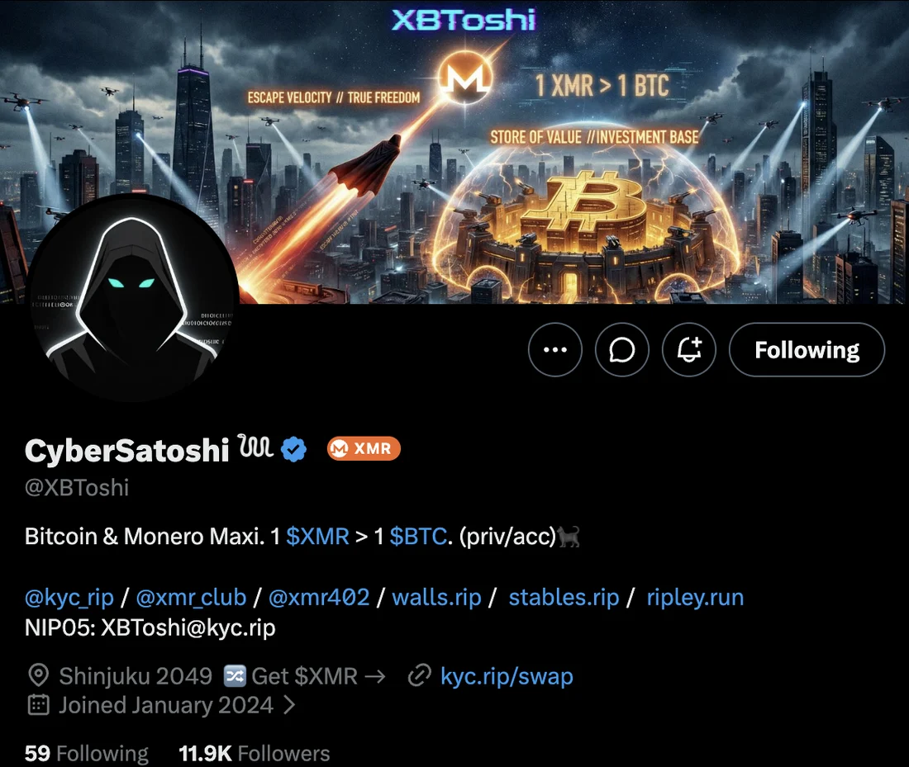
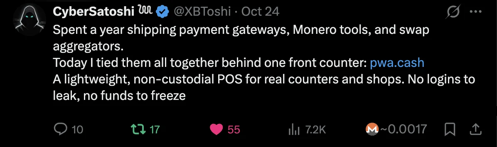
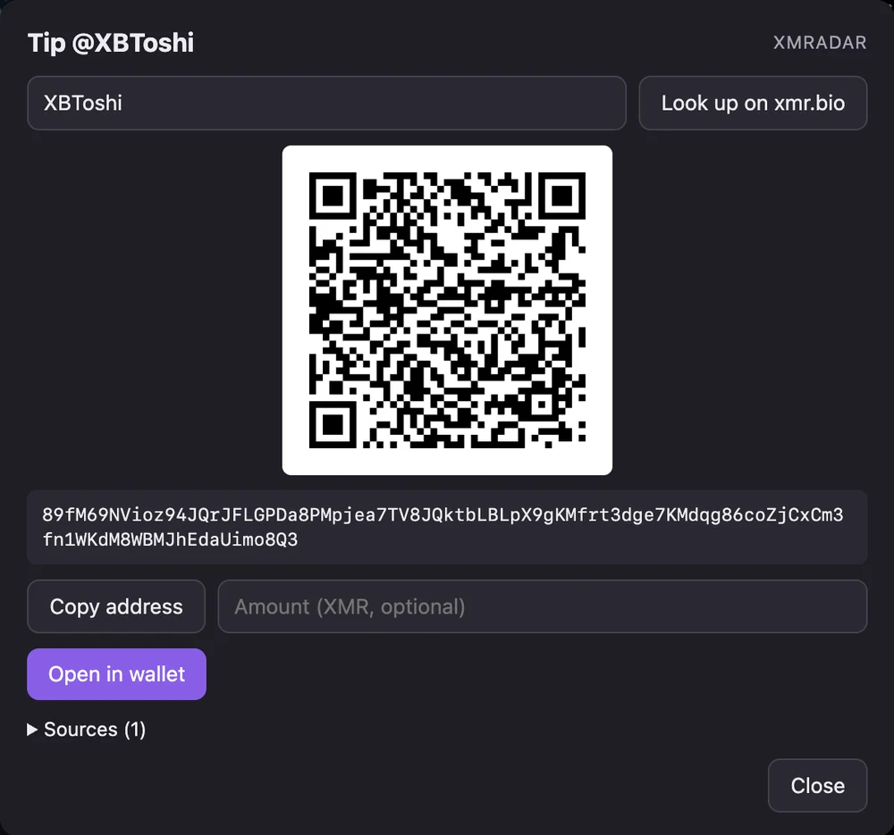

satoshi.fanXMR· 2h
Ran a node at home for a year. Notes on bandwidth, disk and what broke.
ReplyRepostɱ 0.006 ✓
An XMR badge on X for people who published a Monero address on Nostr or verified it on xmr.bio, including people XMRadar listed there. Click it to tip from your own wallet; a Xap records the tip on Nostr. Totals separate tips the recipient confirmed from ones that are only claimed.
A heart next to the Xap button sends the author a Monero like over Nostr. Hold it (or press Shift+Enter) to like the post on X too. Badge holders who haven't set up XMRadar yet get it too: it waits for them, and counts once they do. Accounts with xos get a thin orange ring on their avatar and the total in their badge, counted by xmr.bio. Received xos count only from Monero people, with a Monero address and a verified X link, and can notify you along with your Xaps.
Four steps: a Nostr key, your X handle, your Monero address, and one tweet that links them. No signer? XMRadar makes a Nostr key for you, kept in this browser. Once your link and address check out, XMRadar also lists you on xmr.bio (you can untick it), whose directory XMRadar users with badges on download, so they see your badge too.
On an exchange's order page, XMRadar checks the signed NKIP-0001 receipt, or the operator's letter of guarantee (PGP or MistProof), against the addresses on the page and in what you copy. A verified copy is saved in your browser for disputes. The toolbar shows the site's xmr.club grade, with a warning for open incidents, and a lookalike of a listed exchange or wallet gets a warning page before it loads.
Exchange data from xmr.club, licensed CC BY 4.0.
A monero-signin: link opens XMRadar's own window with the site, the account, the address, where the signature goes and the full message. Links that break the spec, have expired or come from another site are refused. Your wallet signs; step-by-step guides for Feather, Monero GUI, Cake Wallet, the CLI and RPC.
A throwaway address in one click for sign-ups. New mail shows up as a notification with the code already pulled out.
qz4r8m@ghostmail.kyc.rip42 minRight-click a post on X, Bluesky, Mastodon or any page, or hover it and press Alt+Shift+N. Text, images, whole X threads, quoted posts as a picture, and up to 5 tags go to your relays, signed by your own NIP-07 signer (needed here: XMRadar's own key never signs your posts). Copied X posts get a small Nostr ✓.
Menu → Chat opens chat.xmr.club in Chrome's side panel or Firefox's sidebar: a lobby, an X room and a room for each site listed on xmr.club.
yourhandle.oa.xmr.bio, for OpenAlias wallets. Then anyone can tip them from their own wallet.
Real screenshots from @XBToshi's profile, with XMRadar installed.


~ means claimed by the tippers, not yet confirmed).
XMRadar runs in your browser, with no account. Its own site is asked only for the latest version number; other services are asked only for the features you use, listed below. The code is open, so you can check every claim.
KYC-rip/xmradarRead the source →
Not in the Chrome or Firefox stores yet. Download the zip from GitHub Releases, unzip it, and load it from chrome://extensions (Developer mode → Load unpacked), or in Firefox 140+ from about:debugging.
Works with any Monero wallet that opens monero: links. A NIP-07 signer such as Alby or nos2x is optional: without one, XMRadar's own key covers your badge, xo and Xap receipts (when they're on). Copying posts to Nostr needs a signer.
gh attestation verify {{CHROME_ZIP}} -R KYC-rip/xmradar
All releases and checksums →